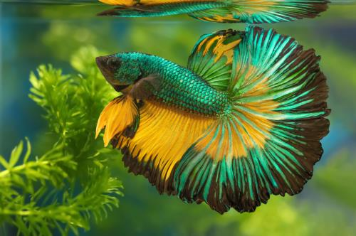
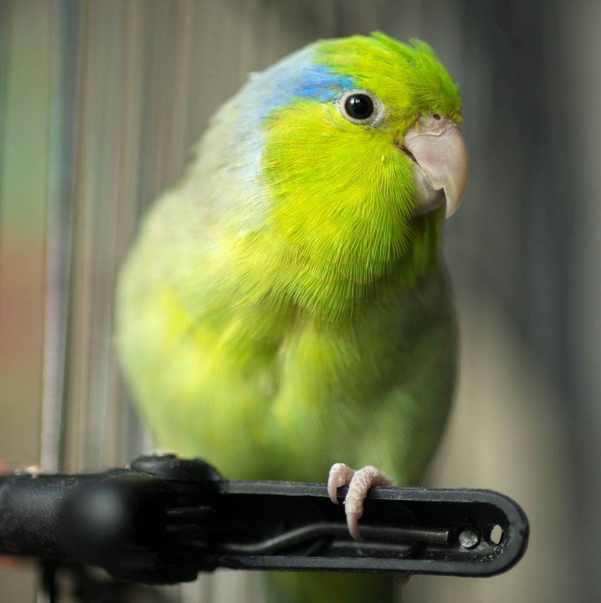
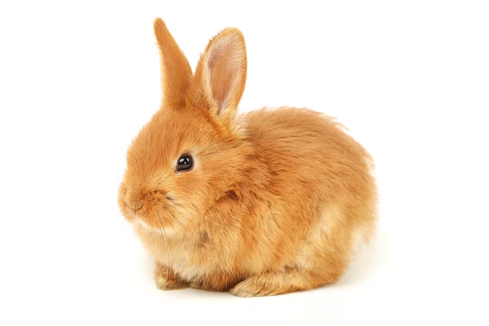

Common Pets for Humans
1. Dogs
- Known for their loyalty, companionship, and diverse breeds.
- Require regular exercise, grooming, and training.
- Offer emotional support, security, and joy to their owners.
- Popular breeds include Labrador Retrievers, German Shepherds, and Golden Retrievers.
- Can be trained for various purposes such as therapy, service, and search and rescue.
2. Cats

- Independent yet affectionate companions.
- Low-maintenance pets that groom themselves and use litter boxes.
- Provide companionship and stress relief to their owners.
- Come in various breeds and coat types, from short-haired to long-haired.
- Enjoy indoor environments but also appreciate outdoor exploration in safe areas.
3. Fish

- Quiet and low-maintenance pets suitable for small spaces.
- Offer visual beauty and relaxation with their colorful appearance and graceful movements.
- Require a suitable aquarium setup with proper filtration, heating, and lighting.
- Come in a wide variety of species, from freshwater to saltwater, each with its own care requirements.
- Some popular freshwater fish species include goldfish, bettas, and guppies.
4. Birds

- Intelligent and social pets that can bond closely with their owners.
- Provide entertainment with their vocalizations, mimicry, and playful behaviors.
- Require regular interaction, mental stimulation, and a spacious cage.
- Come in various species and sizes, from small parakeets to large parrots.
- Popular pet bird species include budgerigars (budgies), cockatiels, and lovebirds.
5. Rabbits

- Gentle and sociable pets that enjoy companionship and interaction.
- Require a spacious enclosure with room to hop, run, and explore.
- Benefit from a diet rich in hay, fresh vegetables, and a small amount of pellets.
- Need regular grooming and veterinary care to maintain their health and well-being.
- Provide companionship and joy to their owners with their curious and affectionate nature.